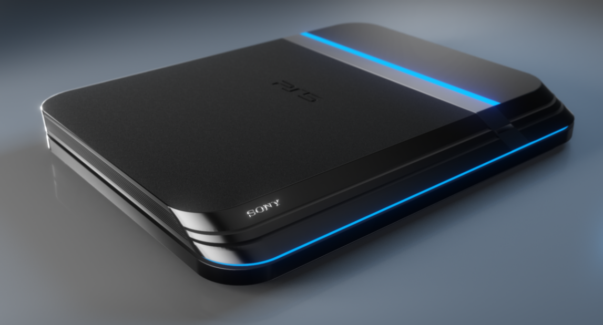

Novos rumores indicam que uma versão Pro do PlayStation 5 está sendo trabalhada e deverá ser lançada até o final de 2023, desta vez a informação vem diretamente do RedGamingTech, como noticiou o GamesRadar. O que valida essa informação é a confiabilidade da RedGamingTech quando o assunto são tecnologias da AMD, como reforça o GamesRadar. A previsão é de que o novo console estará nas lojas até o final de 2023, com uma previsão máxima de lançamento para o primeiro semestre de 2024. O lançamento de um PlayStation 5 Pro para o final de 2023 faria com que o console de nova geração recebesse uma atualização no mesmo período que o seu antecessor, o PS4, recebeu, com uma margem de 3 anos após o seu lançamento.
Também foi dito que o poder de processamento esperado para o PlayStation 5 Pro é de 2x o desempenho encontrado no PlayStation 5, podendo obter uma evolução de até 2,5x quando o assunto inclui a utilização de ray tracing. Mas esses números por enquanto são apenas especulativos, até sabermos a real intenção da Sony ao lançar um modelo avançado do console. A Sony pode estar trabalhando também em uma maneira de utilizar as tecnologias da AMD como o FSR ou até mesmo uma própria tecnologia que se assemelhe ao uso da tecnologia da AMD e ao DLSS da NVIDIA.
Com a escassez de consoles nas lojas mesmo após um ano de seu lançamento, muitos jogadores ainda não conseguiram adquirir o seu aparelho, além disso, o PS5 está apenas no começo de sua vida e a partir de agora que irá começar a receber jogos desenvolvidos especialmente para o console com maior tempo de produção, portanto, ainda não vimos o real poder do console, mas com certeza muitos usuários gostariam de uma versão Pro que tirasse mais desempenho ainda nos games.
Também foi citado que o PlayStation 5 Pro poderá fazer com que o PSVR 2 tenha maior desempenho ao ser utilizado pelos jogadores, já que forneceria um poder de processamento superior ao encontrado no console base já lançado, permitindo mais taxas de quadros e melhores qualidades gráficas. Apesar dos rumores, ainda não há informações oficiais a respeito da existência do PlayStation 5 Pro.